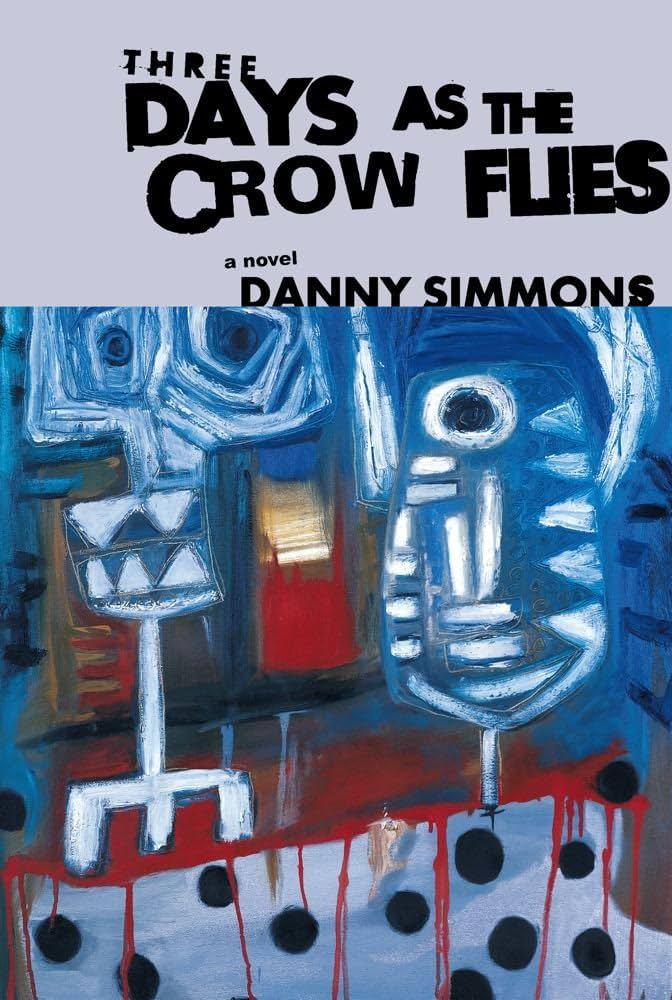
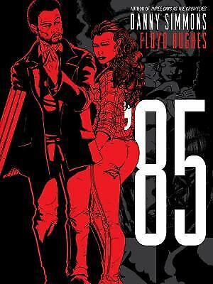

From Novel to Animation
A young artist crosses a charged New York art world where ambition, temptation, money, and survival share the same crowded canvas.
Flare Gun Films is translating Danny Simmons’s novel into a bold animated feature. The project draws on the visual language of painting, street culture, music, and the downtown art scene—building a world that feels alive, dangerous, funny, and unmistakably handmade.